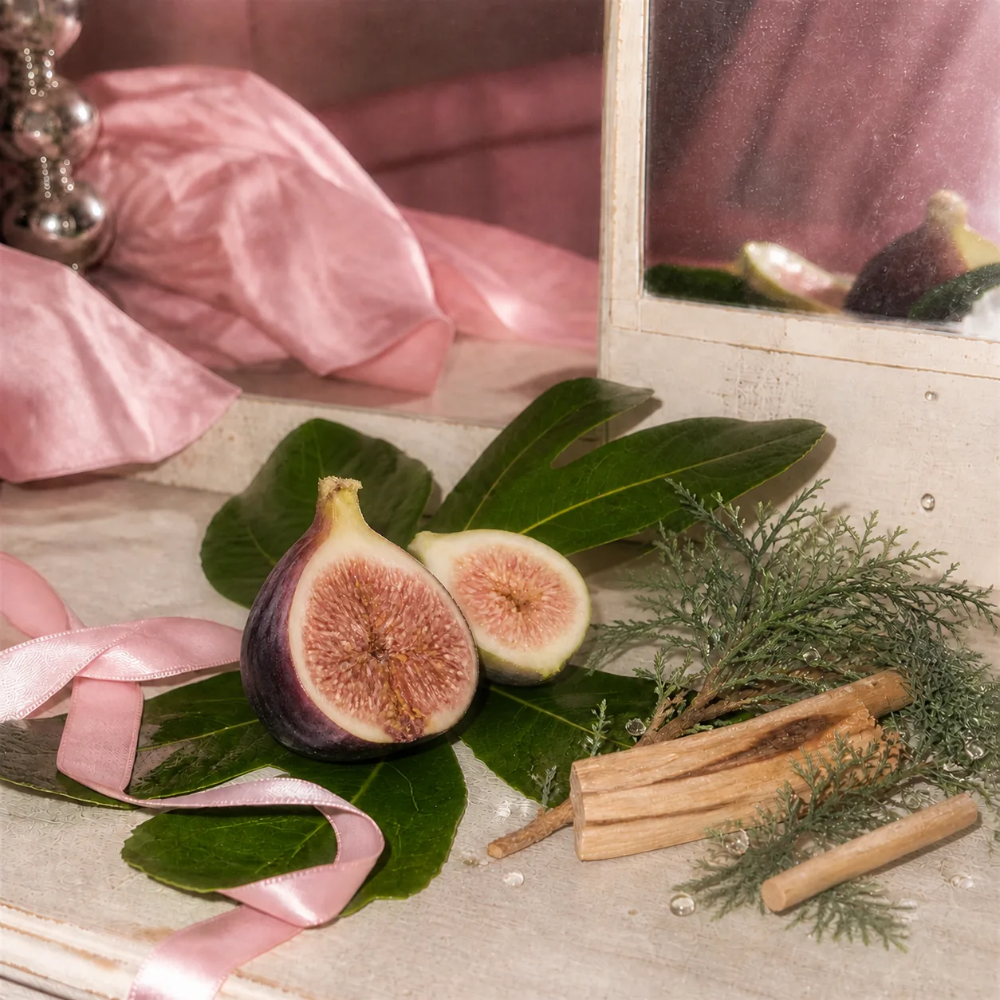
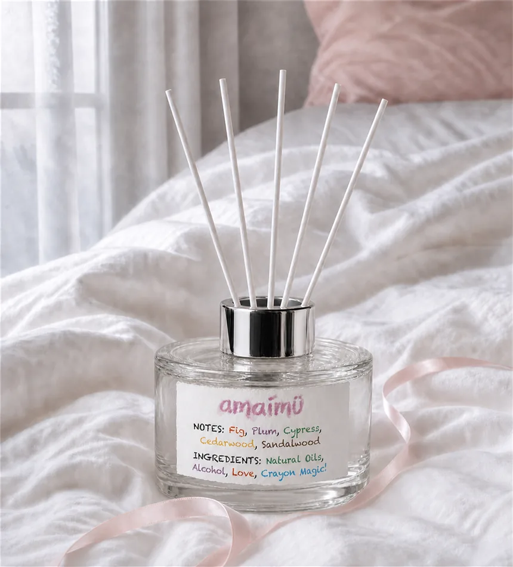
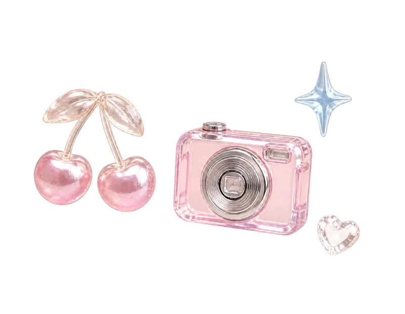
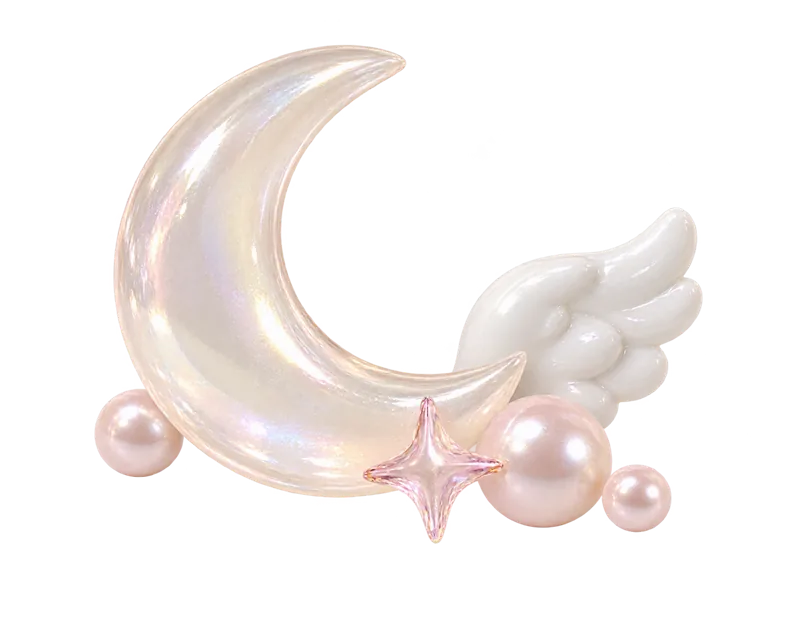
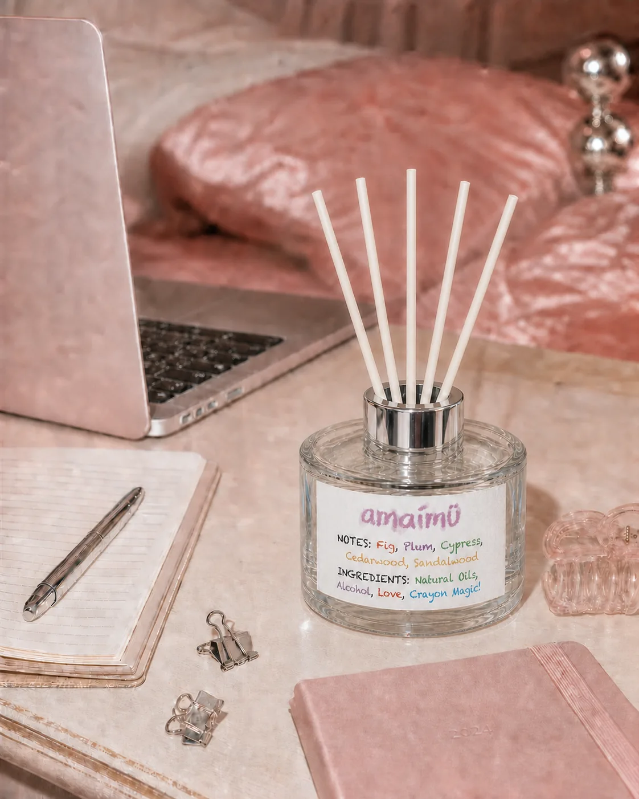
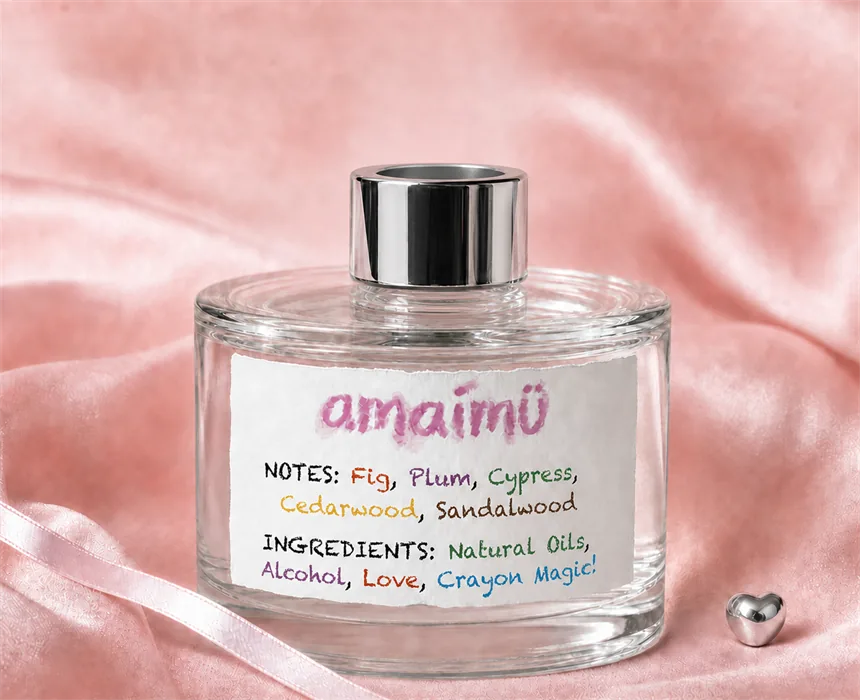

just for u
just for u
Just for U,Amaimu
AT A GLANCE / 3 POINTS
고르기 전에, 세 가지만.

귀여워서 데려온 향,매일 받는 작은 선물처럼
예쁜 컵이나 작은 문구처럼, 귀여워서 자꾸 눈길이 가는 향. amaimü는 내 책상에 놓고 매일 바라보는 즐거움을 생각합니다. 아무 기념일이 아니어도 나에게, 문득 떠오르는 친구에게 선물하고 싶은 마음으로요.

무화과 나무 숲을 닮은맑고 차분한 향
잘 익은 무화과와 소량의 자두가 부드럽게 열리고, 무화과 과육 사이로 편백과 사이프러스의 맑은 숲 공기가 스며듭니다. 시더우드와 소량의 샌달우드가 차분한 결을 남겨 달지 않고 고급스러운 무화과 우드 향으로 이어집니다.

좋아하는 것들이놓인 책상

커피를 내리고 해야 할 일을 펼쳐 놓는 오후. 책상 위에 기분에 맞는 향을 더해 보세요.
네 자리가 떠올라서,고른 작은 선물

친구가 좋아하는 색, 늘 앉아 있는 책상, 함께 고른 작은 소품. 그 자리에 어울릴 것 같아서 골랐다는 말과 함께 건네보세요.

내 취향을 완성하는한 끗
내 일상이 흘러가는 책상, 노트와 크레용, 좋아하는 크고 작은 물건들 사이.amaimü는 향과 오브제로 마지막 분위기를 더합니다.
투명한 보틀에 담은amaimü의 무드
맑은 유리와 실버 캡, 부드러운 핑크 로고와 자유로운 컬러 레터링.선반 위에 가볍게 놓아도 amaimü만의 장면이 완성됩니다.

signature detail핑크 로고와 크레용을 떠올리는 글씨, 밝게 반사되는 실버 캡. 현재 라벨 디자인 시안에서 확인할 수 있는 디테일입니다.
달지 않게 깊어진무화과 우드
무화과의 인상에 편백과 사이프러스의 맑은 공기감, 시더우드와 샌달우드의 차분한 결이 이어지는 향을 제안합니다. 달콤한 과일만 떠올리기보다 나무와 함께 있는 무화과의 장면으로 살펴보세요.
원하는 분위기에 맞춰즐겨 보세요
보틀을 평평한 곳에 놓고 향액이 라벨에 닿지 않도록조심스럽게 캡을 열어 주세요.
공간의 크기와 원하는 분위기에 맞춰 리드 개수를 조절해 주세요.
향의 변화를 주고 싶은 날에는 티슈로 리드를 잡아 가볍게 뒤집어 주세요.
SET / 현재 기획 구성
두 병으로 나누는
나의 작은 일상.
노트북·문구·리본 등 연출 소품은 상품 구성에 포함되지 않습니다. 리드 길이는 25cm입니다. 용기 실측, 박스 크기와 최종 동봉 개수는 제작 샘플 확인 후 안내합니다.
어떤 향을 고를지 고민된다면 여섯 향 비교하기 +
| 향 | 향의 흐름 | 선택의 기준 |
|---|---|---|
| USÉLESS성수 무화과 ↗ | 무화과 · 자두 → 편백 · 사이프러스 → 우드 | 서울의 기억을 담은 선물, 단정한 공간 |
| amaimüMiss Fig ↗ | 무화과 · 자두 → 편백 · 사이프러스 → 우드 | 컬러 레터링과 내 책상 위 작은 즐거움 |
| USÉLESS호텔 블랭킷 ↗ | 클린 → 라벤더 → 머스크 | 여행에서 만난 침실의 분위기 |
| USÉLESS서울숲의 아침 ↗ | 그린 리프 → 히노키 · 시더우드 → 머스크 | 나무와 이른 산책을 좋아하는 취향 |
| USÉLESS석촌 체리우드 ↗ | 체리 · 꽃잎 → 시더우드 · 샌달우드 → 머스크 | 함께 걸었던 계절과 우드 톤의 공간 |
| USÉLESS카페 플라워티 ↗ | 베르가모트 → 플로럴 티 · 블랙 티 → 머스크 | 찻잔과 책이 있는 오후의 테이블 |
현재 소개된 향 노트와 브랜드 제안을 비교한 안내입니다. 성수 무화과와 Miss Fig는 공통된 무화과·우드 노트를 소개하고 있어, 향의 차이를 단정하기보다 디자인과 담고 싶은 장면을 함께 살펴보세요.
제품 정보
- 제품명
- amaimü 리드 디퓨저 · Miss Fig
- 용량
- 200ml (6.7 fl.oz.)
- 구성
- 본품 2병 · 화이트 리드스틱 2세트 · 무인쇄 E골 공용박스 · 기본 칸막이 · 브랜드 스티커
- 캡 / 리드
- 실버 캡 · 화이트 리드스틱
- 라벨
- amaimü 시그니처 그래픽 라벨 · 모든 제품 동일 사양
- 향 노트
- Fig · Plum · Fig Pulp · Hinoki · Cypress · Cedarwood · Sandalwood
- 사용 기간
- 제조사 확인 후 표기 리드 개수와 환기 빈도에 따라 달라집니다.
- 제조국
- 대한민국
- 제조 정보
- 신고 완료 후 제조사 안내 문구와 동일하게 기재
- 사용 시 주의
- 화기와 직사광선을 피하고 어린이와 반려동물의 손이 닿지 않는 곳에 보관하세요. 향액이 도장면·가죽·플라스틱 표면에 닿지 않도록 주의하세요.
자주 묻는 질문
라벨은 제품마다 다른가요?
아니요. 모든 제품에 동일한 amaimü 시그니처 그래픽 라벨이 적용됩니다.
흰 리드의 색이 변해도 괜찮나요?
향액이 배면서 리드 색이 아주 연하게 달라질 수 있습니다. 사용에는 문제가 없으며 신경 쓰일 때 새 리드로 교체해 주세요.
향의 강도는 어떻게 조절하나요?
리드 개수와 뒤집는 주기로 조절할 수 있습니다. 공간의 크기와 환기 빈도에 맞춰 편안한 정도를 찾아 주세요.
라벨에 물이 묻으면 어떻게 하나요?
종이 라벨은 물과 습기에 약합니다. 젖은 손으로 만지지 말고 향액이 닿지 않도록 주의해 주세요.